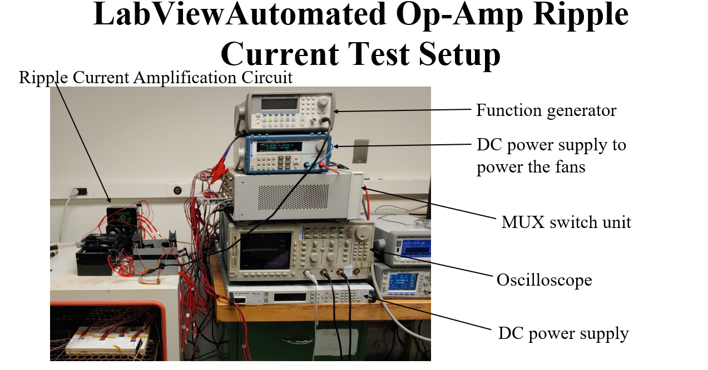
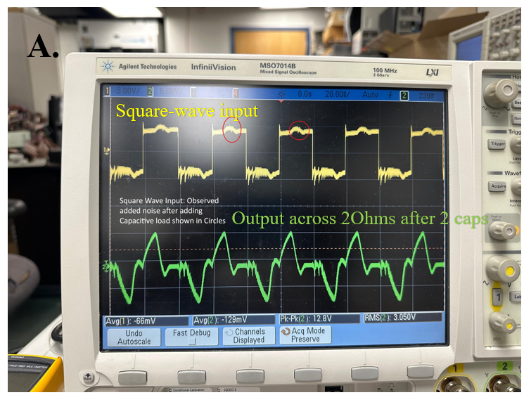
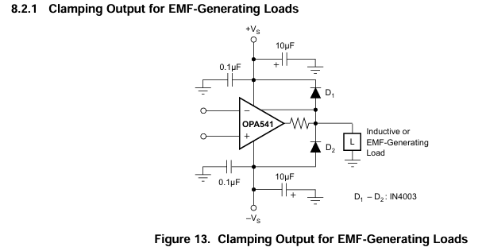

Project Overview
Investigated the reliability impact of ripple current on MLCCs under highly accelerated life testing (HALT) conditions. The study targeted the insulation resistance (IR) drop failure mechanism and evaluated sensitivity across case sizes and manufacturers.
Design of Experiments (DOE)
- Factor space: Case size (multiple), Manufacturer (multiple), Ripple current level, and Temperature.
- Objective: quantify the effect of ripple current & temperature on IR degradation, and capture interactions with physical size/vendor.
- Outcome measures: Capacitance, Dissipation Factor, Insulation Resistance, temperature, and ripple current.
Automated Test Bench & Data Acquisition
Built an integrated LabVIEW setup to eliminate instrument switching and sustain long‑duration testing.
- Instrumentation: Function generators, DC power supplies, Op‑Amps, multiplexer, thermocouples.
- Control & logging: LabVIEW for stimulus orchestration, channel selection, and synchronized data capture.
- Throughput: continuous 5000 hrs of testing across units without operator intervention.
Analysis Methods
- Electrical data analysis across time: trend and stability of C/DF/IR vs. stress.
- ANOVA to assess main effects and interactions (case size, current, manufacturer).
- Process capability and reliability metrics for IR degradation thresholds.
- Optical microscopy to correlate failure evidence with electrical degradation.
Key Findings
- Ripple current contributes to a decline in insulation resistance in MLCCs under HALT.
- Effect magnitude is influenced by case size, applied current, and manufacturer.
- Automated bench reduced handling risk and ensured consistent, high‑volume data collection.
Presentations
- Findings presented to project sponsor.
- Shared at the CALCE Consortium Reliability Symposium.
Tools & Technologies
LabVIEW, PSpice, Optical Microscopy, MATLAB / Python (data analysis), Multiplexed DAQ, Thermocouples, DC PSUs, Function Generators, Op‑Amps
Impact
- Provided evidence‑based guidance for MLCC selection under ripple‑rich environments.
- Clarified vendor and case‑size sensitivities impacting IR under combined stresses.
- Delivered an automatable methodology for long‑duration component screening.
Test Matrix (Example)
| Case | Vendor | Ripple (A) | Temp (°C) |
|---|---|---|---|
| 0603 | A | 0.05 → 0.15 | 25 → 85 |
| 0805 | B | 0.05 → 0.20 | 25 → 105 |
| 1206 | C | 0.10 → 0.30 | 25 → 125 |
Customize this table to match your actual DOE ranges and levels.
Project Gallery
Test Setup

Automated LabVIEW Test Bench
Measurements

Ripple Current Stress on Capacitor
Implementation Details

TI Datasheet Clamping for Capacitive Loads